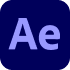
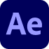

Markedsføringsvideo
Markedsføringsvideo af Word Festival. Produceret i Adobe Premiere Pro.
Digital kreativitet med et personligt aftryk:
Jeg brænder for at skabe engagerende SoMe-universer,
visuel branding og digitale løsninger, der gør indhold
mere levende, brugervenligt og meningsfuldt.
Jeg hedder Mai Lønborg Dittfeld, jeg er 22 år og kommer fra Sønderjylland.
Jeg bor i Odense, hvor jeg studerer multimediedesign på UCL.
Her arbejder jeg med digitalt indhold, kreativ idéudvikling og visuelle udtryk,
der både skal fange opmærksomheden og skabe stemning.
Min interesse for SoMe og visuelt design begyndte i gymnasiet, hvor jeg opdagede,
hvordan æstetik kan forme et brand. Jeg elsker at arbejde med farver, struktur og typografi,
og hvordan de tilsammen kan skabe et levende visuelt univers.
Mit mål er at arbejde med content og sociale medier i modebranchen,
hvor storytelling og æstetik kan smelte sammen og skabe visuelle oplevelser,
der inspirerer.
 



Markedsføringsvideo af Word Festival. Produceret i Adobe Premiere Pro.
Moving Art af maleriet “Dancing Flower” af Keith Haring. Produceret i Adobe After Effects og Adobe Premiere Pro.
Interview med fokus på lys, kamera, a-roll og b-roll. Produceret i Adobe Premiere Pro.
Re-design af udvalgt hjemmeside. Re-designet i Adobe InDesign.
Design og branding af flyer og brochure for Word Festival. Designet i Adobe InDesign.
Fotografi af genstand. Redigeret med Adobe Lightroom.
Du er altid velkommen til at kontakte på følgende:
E-mail: maidittfeld@gmail.com
Telefon nr.:
+45 50 47 54 21
Instagram:
@mai_dittfeld
Du er velkommen til at udfylde denne formular og jeg vil kontakte dig hurtigst muligt.